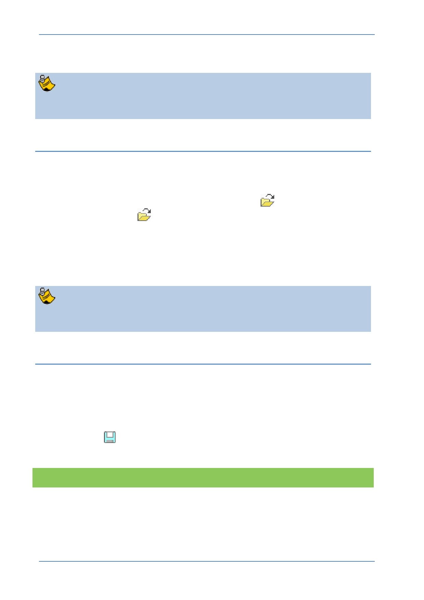

PTC Academic Program
From the Creo Parametric File Open dialog box - Right-click the folder that is to be
the new working directory and select Set Working Directory from the pop-up
menu.
You can browse directly to the working directory at any time by selecting Working
Directory in the folder view of the Navigator panel on the left of the Creo window.
Opening Files
After you have set your working directory, you will see the files in that folder each time
you click Open in Creo Parametric.
You can use any of the following methods to open a file:
Click File> Open from the main menu, click Open
from the Quick Access
toolbar or click Open
from the Home tab. Then, in the File Open dialog box,
you either double-click the file you want to open or select the file and click Open .
Browse to the desired folder using the Navigator to display its contents in the
browser. Then, you either double-click the file you want to open or, right-click the file
in the browser and select Open from the pop-up menu.
Drag a file from the browser into the graphics area.
The File Open dialog box is the equivalent of the Navigator and Browser
combination in the main interface.
Saving Files
By default, files are saved to the folder they were opened from. A new part, assembly,
or drawing will be saved to the folder that is active when you click OK from the Save
Object dialog box.
You can use any of the following methods to save a file:
Click File> Save from the File menu.
Click Save
from the Quick Access toolbar.
Use the CTRL + S keyboard shortcut.
What have you learned?
The layout of Creo Parametric ’s user interface
Interface items such as the Dashboard, dialog boxes, and the ribbon interface
Working directories and file management
© 2012 PTC
Creo Parametric 2.0 Primer
Page 11